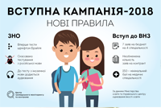

Коротко про головне

Дні відкритих дверей
12.05.2018
02.06.2018

Вступна кампанія 2018
2 липня 2018 року, почалася реєстрація електронних кабінетів вступників – вона буде відкрита до 18-ї години 25 липня.

КОНФЕРЕНЦІЯ «КОМПОЗИЦІЙНІ МАТЕРІАЛИ»
Основні тематичні напрямки конференції:
СЕКЦІЯ 1. Композиційні матеріали на основі полімерів.
СЕКЦІЯ 2. Композиційні матеріали на основі тугоплавких, неметалевих і силікатних матеріалів.